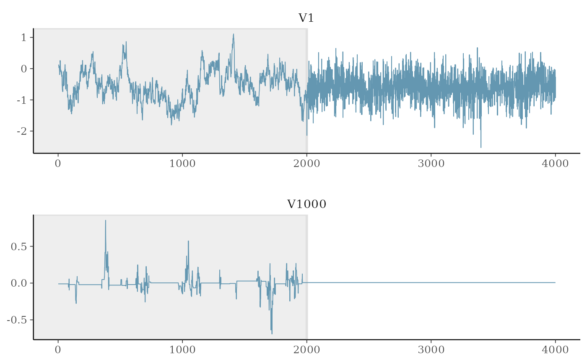

Multinomial Logistic Regression with Heavy-Tailed Priors
Longhai Li and Steven Liu
2024-08-15
Source:vignettes/simu.Rmd
simu.RmdData Generation
Load the necessary libraries:
library(HTLR)
library(bayesplot)
#> This is bayesplot version 1.11.1
#> - Online documentation and vignettes at mc-stan.org/bayesplot
#> - bayesplot theme set to bayesplot::theme_default()
#> * Does _not_ affect other ggplot2 plots
#> * See ?bayesplot_theme_set for details on theme settingThe description of the dataset generating scheme is found from Li and Yao (2018).
There are 4 groups of features:
feature #1: marginally related feature
feature #2: marginally unrelated feature, but feature #2 is correlated with feature #1
feature #3 - #10: marginally related features and also internally correlated
feature #11 - #2000: noise features without relationship with the y
SEED <- 1234
n <- 510
p <- 2000
means <- rbind(
c(0, 1, 0),
c(0, 0, 0),
c(0, 0, 1),
c(0, 0, 1),
c(0, 0, 1),
c(0, 0, 1),
c(0, 0, 1),
c(0, 0, 1),
c(0, 0, 1),
c(0, 0, 1)
) * 2
means <- rbind(means, matrix(0, p - 10, 3))
A <- diag(1, p)
A[1:10, 1:3] <-
rbind(
c(1, 0, 0),
c(2, 1, 0),
c(0, 0, 1),
c(0, 0, 1),
c(0, 0, 1),
c(0, 0, 1),
c(0, 0, 1),
c(0, 0, 1),
c(0, 0, 1),
c(0, 0, 1)
)
set.seed(SEED)
dat <- gendata_FAM(n, means, A, sd_g = 0.5, stdx = TRUE)
str(dat)
#> List of 4
#> $ X : num [1:510, 1:2000] -1.423 -0.358 -1.204 -0.556 0.83 ...
#> ..- attr(*, "dimnames")=List of 2
#> .. ..$ : NULL
#> .. ..$ : chr [1:2000] "V1" "V2" "V3" "V4" ...
#> $ muj: num [1:2000, 1:3] -0.456 0 -0.456 -0.376 -0.376 ...
#> $ SGM: num [1:2000, 1:2000] 0.584 0.597 0 0 0 ...
#> $ y : int [1:510] 1 2 3 1 2 3 1 2 3 1 ...Look at the correlation between features:
Split the data into training and testing sets:
set.seed(SEED)
dat <- split_data(dat$X, dat$y, n.train = 500)
str(dat)
#> List of 4
#> $ x.tr: num [1:500, 1:2000] 0.889 -0.329 1.58 0.213 0.214 ...
#> ..- attr(*, "dimnames")=List of 2
#> .. ..$ : NULL
#> .. ..$ : chr [1:2000] "V1" "V2" "V3" "V4" ...
#> $ y.tr: int [1:500] 2 3 2 1 2 3 3 3 1 2 ...
#> $ x.te: num [1:10, 1:2000] 0.83 -0.555 1.041 -1.267 1.15 ...
#> ..- attr(*, "dimnames")=List of 2
#> .. ..$ : NULL
#> .. ..$ : chr [1:2000] "V1" "V2" "V3" "V4" ...
#> $ y.te: int [1:10] 2 3 2 1 2 2 2 1 2 3Model Fitting
Fit a HTLR model with all default settings:
set.seed(SEED)
system.time(
fit.t <- htlr(dat$x.tr, dat$y.tr)
)
#> user system elapsed
#> 222.312 0.106 56.576
print(fit.t)
#> Fitted HTLR model
#>
#> Data:
#>
#> response: 3-class
#> observations: 500
#> predictors: 2001 (w/ intercept)
#> standardised: TRUE
#>
#> Model:
#>
#> prior dist: t (df = 1, log(w) = -10.0)
#> init state: lasso
#> burn-in: 1000
#> sample: 1000 (posterior sample size)
#>
#> Estimates:
#>
#> model size: 4 (w/ intercept)
#> coefficients: see help('summary.htlr.fit')With another configuration:
set.seed(SEED)
system.time(
fit.t2 <- htlr(X = dat$x.tr, y = dat$y.tr,
prior = htlr_prior("t", df = 1, logw = -20, sigmab0 = 1500),
iter = 4000, init = "bcbc", keep.warmup.hist = T)
)
#> user system elapsed
#> 358.195 0.531 91.496
print(fit.t2)
#> Fitted HTLR model
#>
#> Data:
#>
#> response: 3-class
#> observations: 500
#> predictors: 2001 (w/ intercept)
#> standardised: TRUE
#>
#> Model:
#>
#> prior dist: t (df = 1, log(w) = -20.0)
#> init state: bcbc
#> burn-in: 2000
#> sample: 2000 (posterior sample size)
#>
#> Estimates:
#>
#> model size: 4 (w/ intercept)
#> coefficients: see help('summary.htlr.fit')Model Inspection
Look at the point summaries of posterior of selected parameters:
summary(fit.t2, features = c(1:10, 100, 200, 1000, 2000), method = median)
#> class 2 class 3
#> Intercept -3.4152441685 -0.9029461257
#> V1 10.9550978781 0.1139902897
#> V2 -6.8077131737 -0.0722711733
#> V3 0.0378395213 3.4469321695
#> V4 0.0132365292 -0.0003944103
#> V5 -0.0059859587 0.0089446064
#> V6 0.0004462757 -0.0007938343
#> V7 -0.0012941611 0.4338033125
#> V8 0.0025413224 0.0003075648
#> V9 -0.0092135141 -0.0108003250
#> V10 0.0045097384 0.0092975612
#> V100 0.0033002759 -0.0017995756
#> V200 0.0060097424 -0.0036481106
#> V1000 0.0035715341 0.0121408681
#> V2000 -0.0056809289 -0.0004195035
#> attr(,"stats")
#> [1] "median"Plot interval estimates from posterior draws using bayesplot:
post.t <- as.matrix(fit.t2, k = 2)
## signal parameters
mcmc_intervals(post.t, pars = c("Intercept", "V1", "V2", "V3", "V1000"))Trace plot of MCMC draws:
as.matrix(fit.t2, k = 2, include.warmup = T) %>%
mcmc_trace(c("V1", "V1000"), facet_args = list("nrow" = 2), n_warmup = 2000)
The coefficient of unrelated features (noise) are not updated during some iterations due to restricted Gibbs sampling Li and Yao (2018), hence the computational cost is greatly reduced.
Make Predictions
A glance at the prediction accuracy:
y.class <- predict(fit.t, dat$x.te, type = "class")
y.class
#> y.pred
#> [1,] 2
#> [2,] 2
#> [3,] 2
#> [4,] 3
#> [5,] 2
#> [6,] 2
#> [7,] 2
#> [8,] 3
#> [9,] 2
#> [10,] 3
print(paste0("prediction accuracy of model 1 = ",
sum(y.class == dat$y.te) / length(y.class)))
#> [1] "prediction accuracy of model 1 = 0.7"
y.class2 <- predict(fit.t2, dat$x.te, type = "class")
print(paste0("prediction accuracy of model 2 = ",
sum(y.class2 == dat$y.te) / length(y.class)))
#> [1] "prediction accuracy of model 2 = 0.7"More details about the prediction result:
predict(fit.t, dat$x.te, type = "response") %>%
evaluate_pred(y.true = dat$y.te)#> $prob_at_truelabels
#> [1] 0.98881252 0.32727524 0.98210498 0.03068972 0.99976125 0.70578256
#> [7] 0.99982799 0.07120373 0.98702519 0.97246844
#>
#> $table_eval
#> Case ID True Label Pred. Prob 1 Pred. Prob 2 Pred. Prob 3 Wrong?
#> 1 1 2 1.116066e-02 9.888125e-01 2.682052e-05 0
#> 2 2 3 1.342592e-01 5.384656e-01 3.272752e-01 1
#> 3 3 2 1.789154e-02 9.821050e-01 3.476804e-06 0
#> 4 4 1 3.068972e-02 2.751081e-10 9.693103e-01 1
#> 5 5 2 3.283030e-05 9.997613e-01 2.059150e-04 0
#> 6 6 2 2.309747e-01 7.057826e-01 6.324276e-02 0
#> 7 7 2 1.953297e-05 9.998280e-01 1.524749e-04 0
#> 8 8 1 7.120373e-02 2.890835e-04 9.285072e-01 1
#> 9 9 2 1.286960e-02 9.870252e-01 1.052145e-04 0
#> 10 10 3 2.752929e-02 2.271286e-06 9.724684e-01 0
#>
#> $amlp
#> [1] 0.7662135
#>
#> $err_rate
#> [1] 0.3
#>
#> $which.wrong
#> [1] 2 4 8